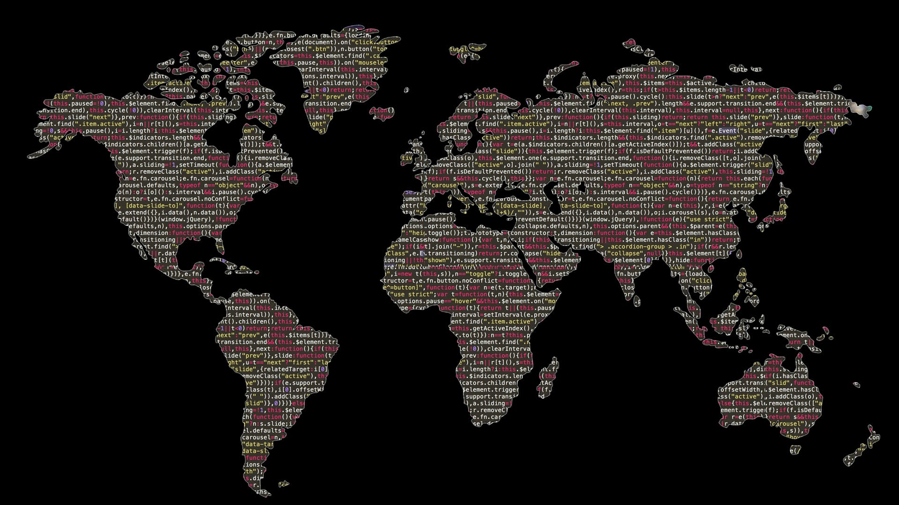

This forecast dashboard is an interactive web tool that visualizes future inventory demand using time-series forecasting. Built with HTML, JavaScript, Chart.js, and PapaParse, it allows users to switch between forecast charts for multiple warehouse items and view projected demand along with confidence intervals. The forecast data is generated using Facebook Prophet and fed into the dashboard as CSV files. This project combines data science and frontend development to solve real-world operational planning challenges.

Cleaned a raw sales dataset using Excel’s built-in functions and tools. Removed duplicate entries, standardized customer name formatting with TRIM() and PROPER(), and validated all date entries for consistency. Converted the “Amount Paid” column to numeric values and handled missing data using logical functions. This exercise focused on preparing data for analysis through efficient cleaning practices.
This Tableau dashboard offers a clear overview of ticket management performance through multiple visualizations. It features a bar chart showing tickets by category, a donut chart breaking down ticket statuses, and an area chart displaying monthly ticket trends. Key metrics like average resolution time and total tickets provide quick insight into service efficiency. Each chart is accompanied by a brief analysis to help stakeholders understand the data and identify areas for improvement. The dashboard is designed to communicate effectively with both technical and non-technical users, supporting informed decision-making.
This task involved combining customer and purchase data using lookup functions available in Excel 2016. Applied VLOOKUP() to pull customer names and regions into the purchase table based on matching customer IDs. Handled missing matches gracefully using IFERROR() to ensure a smooth integration of records. XLOOKUP() was not supported in my version of Excel. However I achieved the required functionality using traditional methods. This project reinforced relational data concepts and lookup operations crucial to ETL workflows.
|Full Data Work Flow|
|SQL Data → SQL Queries → Javascript → Excel|

This project works across the data pipeline — from raw data to meaningful insights and presentation-ready visuals. It demonstrates a complete data analysis workflow using MySQL, JavaScript, and Excel. A mock sales database was created, sample transactional data was inserted, and SQL queries were written to analyze sales by region, product, and month. An interactive dashboard was built using Chart.js and JavaScript (not included in the repository due to browser-based limitations) to visualize regional, product, and monthly performance. A professional Excel report was also created, featuring pivot tables and a bar chart to summarize the data.
|Full Data Work Flow|
|SQL Data → SQL Queries → Javascript → Excel|
This project is a full-stack Widget Sales Dashboard that visualizes sales data by product, region, and month. The backend is built with Node.js and Express, connecting to a MySQL database to provide structured API endpoints for dynamic data retrieval. The frontend, built with HTML, CSS, and JavaScript using Chart.js, displays interactive bar charts and allows users to export the visualizations as CSV or PDF. This separation of concerns between frontend and backend improves scalability, maintainability, and modularity of the application.

A second British Airways job simulation from theforage.com that utilizes machine learning to predict customer booking behavior based on various flight and passenger-related features. It begins with exploratory data analysis (EDA) to identify trends and patterns in the dataset. Logistic Regression and Random Forest models are trained to classify booking completion, evaluated using accuracy, AUC score, and classification reports. Feature importance analysis highlights key factors influencing bookings, providing actionable insights. The results help airlines optimize booking strategies and improve customer experience..
Analyzes hospital financial performance by examining revenue, expenses, and cost efficiency. It calculates the Expense-to-Revenue Ratio for each hospital, identifying those with high operational costs. Through visualizations such as bar charts and line plots, the project highlights financial trends over time, comparing revenue and expenses. These insights can help hospitals or any applicable business optimize budgeting and improve financial sustainability.
This British Airways job simulation from theforage.com is based off real world applications that current data scientist working for British Airways are tasked with. It focuses on web scraping and sentiment analysis of British Airways customer reviews from Skytrax using BeautifulSoup and Python. The results provide insights into customer experiences, helping to identify areas for airline service improvement. The extracted reviews were cleaned and stored in a structured CSV format for further analysis. Natural Language Processing (NLP) techniques, including sentiment analysis and topic modeling (NMF & TF-IDF), were applied to identify key themes and customer sentiments. Visualizations created with Matplotlib and Seaborn showcased sentiment distribution and topic trends, while bigram analysis highlighted commonly associated phrases.
Focuses on predicting meal order demand using machine learning, specifically a Random Forest Regressor. It involves data preprocessing, feature engineering, and hyperparameter tuning with GridSearchCV to optimize model performance. The final model was evaluated using MAE, MSE, and R² scores, with insights visualized through feature importance analysis and correlation heatmaps to enhance forecasting accuracy. This process can be applied to any business that needs to manage restocking.
Demonstrates the development of an end-to-end Extract, Transform, and Load (ETL) pipeline to process, clean, and analyze campaign and contact data from multiple sources. Using Python, SQL, and data visualization tools, this project integrates diverse datasets into a structured format suitable for analysis and reporting. This ETL pipeline showcases data engineering, SQL, and Python-based analysis while producing actionable insights from complex data structures.
An exploration of randomness through dice roll simulations and random walks, visualized using Plotly and Matplotlib. By simulating 1000 dice rolls and tracking the frequency of each outcome, I created an interactive bar chart to display the results. Additionally, the random walk was plotted using Matplotlib to show the unpredictable nature of movement in two dimensions. The project highlights my ability to work with both statistical simulations and advanced visualization techniques to present data in a compelling way.
Designed for a voting system, this SQL project organizes and secures data for voters, ballots, races, and candidates. It employs advanced triggers for automated audits, checks for overvotes, and strict user roles to uphold election integrity. The project showcases proficiency in relational database design, trigger programming, and enforcing business rules in SQL.

A recommendation system for anime built using the k-Nearest Neighbors algorithm. The system suggests anime based on user preferences, considering factors such as rating and genre, and employs various distance metrics like Cosine, Euclidean, and Manhattan for similarity calculations. The project includes data preprocessing techniques like imputation and feature encoding to prepare the dataset for accurate predictions.

Investigates diversity in the tech sector, focusing on gender and racial representation from 2014 to 2018. Using Python, Pandas, and Matplotlib, it visualizes key trends through bar charts, scatter plots, and regression analysis, providing a comprehensive look at inclusion efforts in the industry.
Alien Invasion is a Pygame-powered arcade shooter where players defend against waves of aliens by controlling a spaceship. The game includes features like progressive difficulty, high score tracking, and smooth event-driven controls. This project demonstrates advanced Python programming, game design principles, and interactive UI development.
Developed a secure employee management database system to efficiently store and organize employee data. The project included creating a detailed schema with employee details and implementing role-based access control to ensure data security. I also designed a custom view to restrict sensitive information while providing department-specific access to relevant data. This project showcases my expertise in SQL, database design, and implementing security measures in business systems.

Visualizes tornado data using JavaScript and Leaflet, leveraging heatmaps and interactive maps to display tornado locations and strengths. The map is built with data sourced from a CSV file, which includes tornado categories, damage costs, and other related information. It allows users to filter tornado data by year and visualize the intensity and distribution of tornadoes using heat layers, marker clusters, and circle overlays. The project combines data-driven visualization with user interaction to provide a clear and engaging experience for exploring tornado patterns.